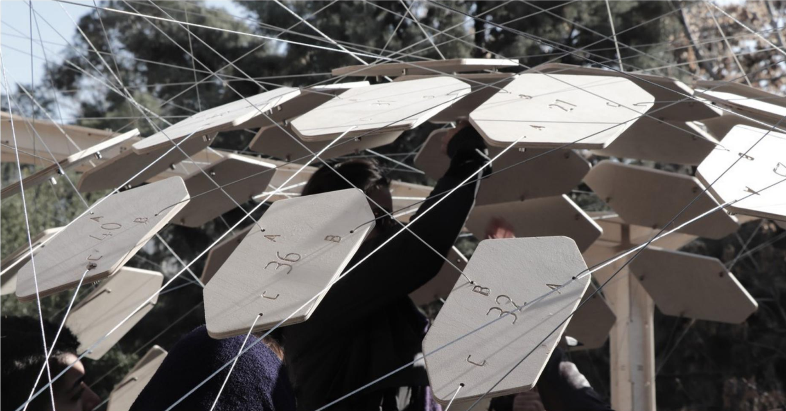
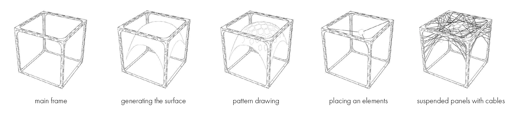
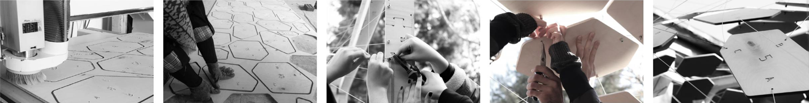
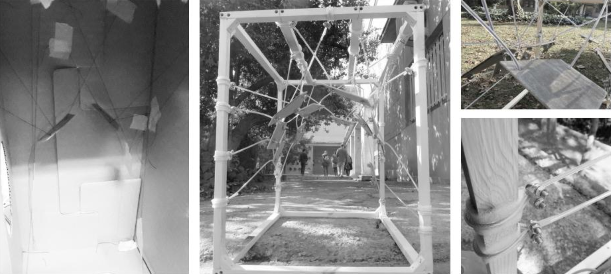
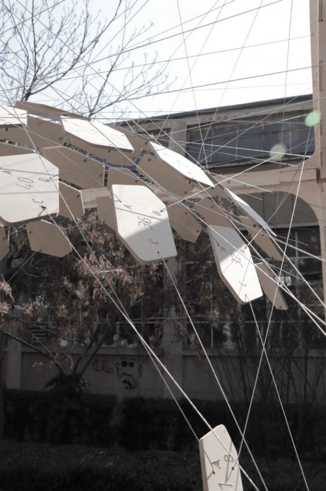
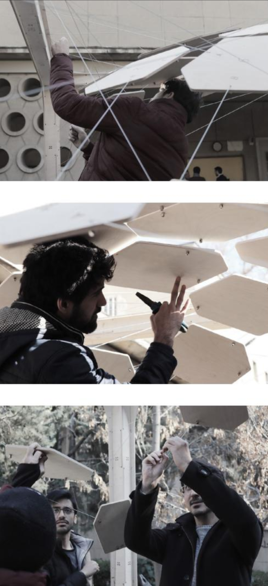
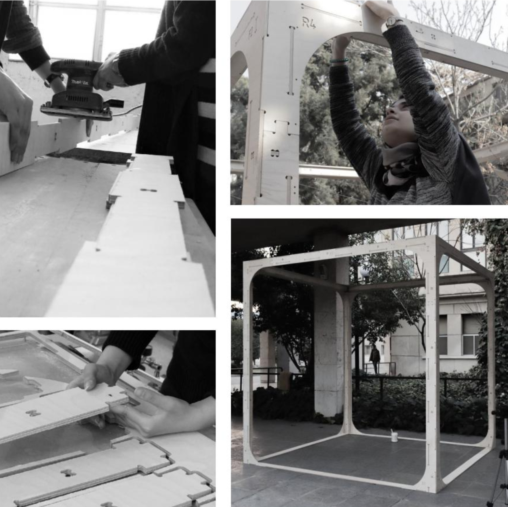
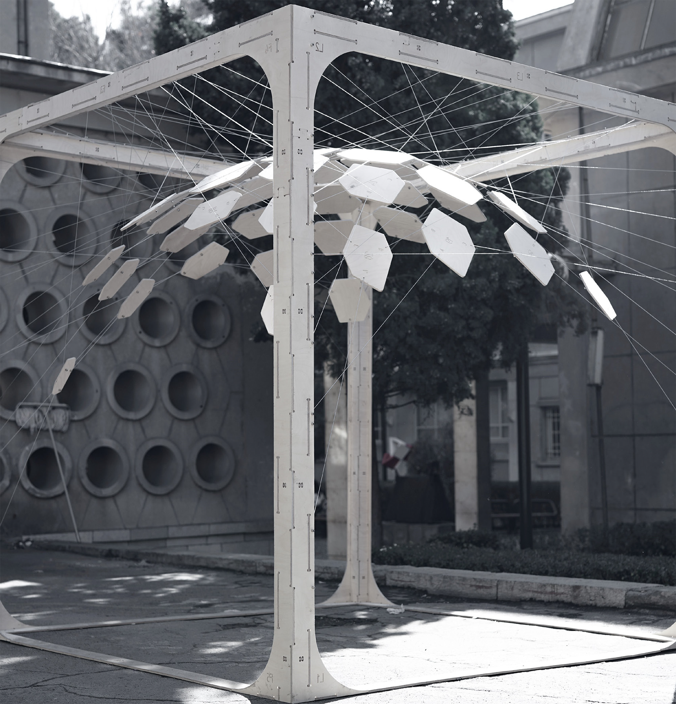

floated plates

CADF98 is a 2-credit course for undergraduate students at the University of Tehran in 2020, aimed at introducing integrated computational design and fabrication. The course covers the basic logic of computational design and utilizes Grasshopper software. Students create preliminary sketches of installations and then finalize designs, developing Grasshopper code to generate models and shop drawings. The structure consists of a cubic frame measuring 2.4 x 2.4 x 2.4 m³ and suspended panels with cables, all cut from 9 mm plywood sheets using a CNC milling machine and assembled by students at the Faculty of Fine Arts courtyard.



The course comprises training and experiential phases. In the training section, students learn about Grasshopper and digital fabrication tools. They progress to designing simple structures and then move on to integrated computational design and fabrication, creating installations and developing Grasshopper code.


One student's model is selected for final real-scale production, involving meticulous joint detailing given material and technique constraints. The final product involves creating a G-code for the CNC milling machine to cut the elements. The structure, comprising a cubic frame and suspended panels, is assembled by students according to numbered elements and cable lengths determined by Grasshopper software, ensuring precise placement.


I work across architecture, scenography, and design. I'm interested in how people experience space, especially in cities, and how stories can change the way a place is perceived. For me, projects are often a way to investigate a question and understand a subject rather than arrive at a fixed answer.